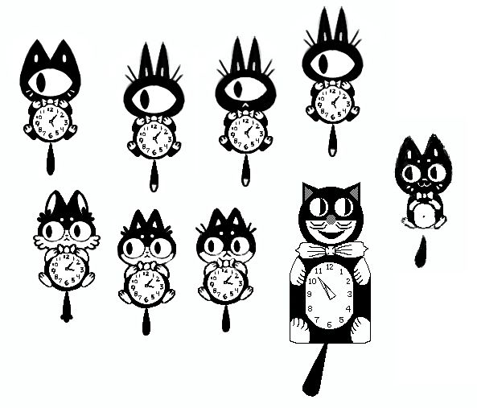

Cat Clock
I designed a custom kit-cat klock utility for uxn.
Visit the cat clock repository to learn how to run it.
Inspired by the art deco novelty wall clock "the Kit-Cat Klock" (most realistic design in the below image), it was late made into a desktop utility for fun, an X10 program by Tony Della Fera, Dave Mankins, Ed Moy, Deanna Hohn and Philip Schneider, in the late 1980's. It was also ported to the Plan 9 operating system by Tom Duff.
We wanted to follow in their footsteps, and to create our own. We finished the project in December 2021.
See our Kit-Cat Klock gif animation[201.8 kB].
![Kit-Cat Klock gif animation[201.8 kB]](../media/content/project/catclock/catclock.gif){kind=link}
This project was drawn and animated entirely in Nasu. The image below is the cat clock sprite file, with all of the frames for the 'eyes'.

The cat also has an animated tail, but this portion was separated into another .chr file.

The animation is 8 frames, and mirrored horizontally to make 16 frames in all.